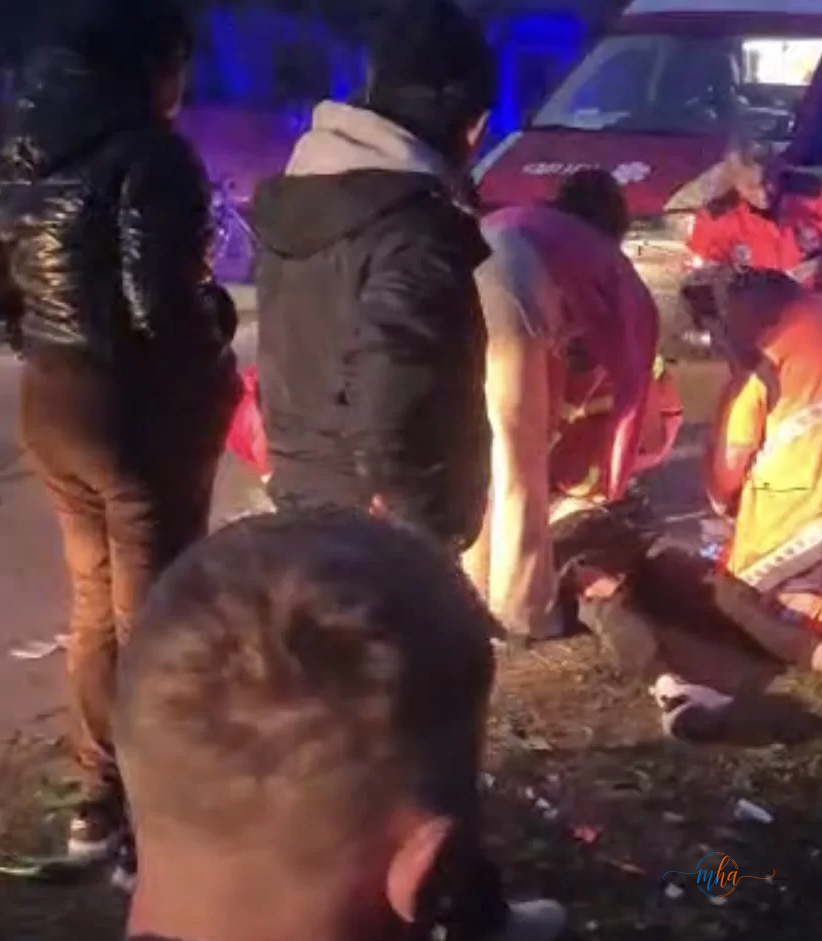

Un accident rutier de o gravitate extremă s-a produs în seara zilei de joi, 26 martie 2026, în localitatea Corcova, județul Mehedinți. Un autoturism și o motocicletă au fost implicate într-o coliziune violentă pe DC61, soldat cu un motociclist în stare critică.
☠ UPDATE — DECES CONFIRMAT | Corcova, DC61
- Locație: Corcova, DC61, județul Mehedinți
- Vehicule implicate: 1 autoturism + 1 motocicletă
- Victimă: motociclist — DECEDAT
- Confirmat de: Serviciul Județean de Ambulanță Mehedinți
- Intervenție: echipaj SMURD din Strehaia
- Cauză probabilă: șoferiță întoarsă fără să se asigure
Cum s-a produs accidentul
Potrivit primelor informații, o șoferiță ar fi întors autoturismul pe DC61, fără să se asigure corespunzător, moment în care a fost lovită din plin de un motociclist care circula regulamentar pe același drum. Impactul a fost violent, mașina fiind proiectată într-un gard de lemn, pe care l-a distrus.

Motocicleta, complet distrusă în urma impactului — Foto: Martor ocular
Motociclistul, resuscitat la fața locului — apoi declarat decedat
La sosirea echipajelor de urgență, motociclistul se afla în stop cardio-respirator și a fost resuscitat la fața locului de echipajul SMURD din Strehaia, care a intervenit de urgență. Cu toate eforturile medicilor, victima nu a putut fi salvată. Medicii Serviciului Județean de Ambulanță Mehedinți au declarat decesul motociclistului.

Echipajul SMURD intervine la fața locului — Foto: Martor ocular
Zeci de localnici s-au adunat la locul accidentului, scene dramatice desfășurându-se în plină noapte pe DC61. Motocicleta, una de culoare verde, a fost complet distrusă în urma impactului.
☠ DECES CONFIRMAT
Medicii Serviciului Județean de Ambulanță Mehedinți au declarat oficial decesul motociclistului implicat în accidentul de pe DC61, Corcova. Este o tragedie care îndoliază județul Mehedinți.
Sursa: Martori oculari / ISU Mehedinți / Redactia MehedintiAzi.ro